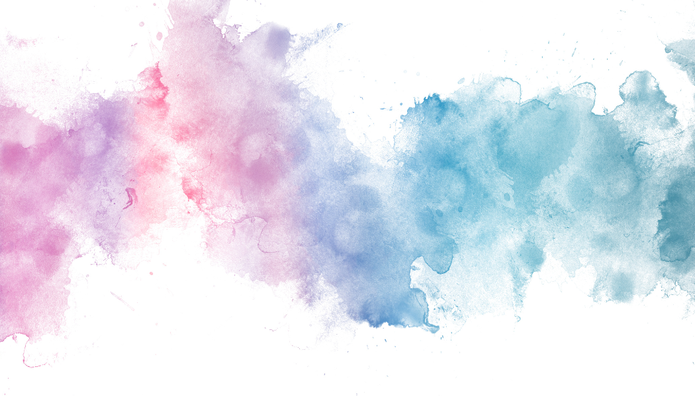

Music
- I play the piano (or rather used to play..Haven't touched it for 3 years). I have completed my Eight Grade in Western Classical Piano and have been certified by Trinity Guildhall.
- I have a Junior Diploma in Hindustani Classical Music from Gandharva Vidhyalaya
Knowing about different places and cultures
- I was fortunate enough that I could travel to many countries within the first phase of my life.
- This helped me develop perspectives.
- I am also fond of watching Travel vlogs on Youtube. They help me discover different parts of the world on a normal day :)
- I wanted to share a few pictures I took:


-
Personal blog on thoughts about life
New hobbies I have been enjoying
- Jan 2024 I finally started running (something I always wanted to do). Nothing makes the blues go away better than a light run in windy weather combined with fun music or a podcast.
- I have also been learning how to paint since mid 2025. I've been taking classes for oil painting and on a free day do a tutorial on water colour painting.
My most fun recent find: GOUACHE paints! They are so cool!



{kind=link}